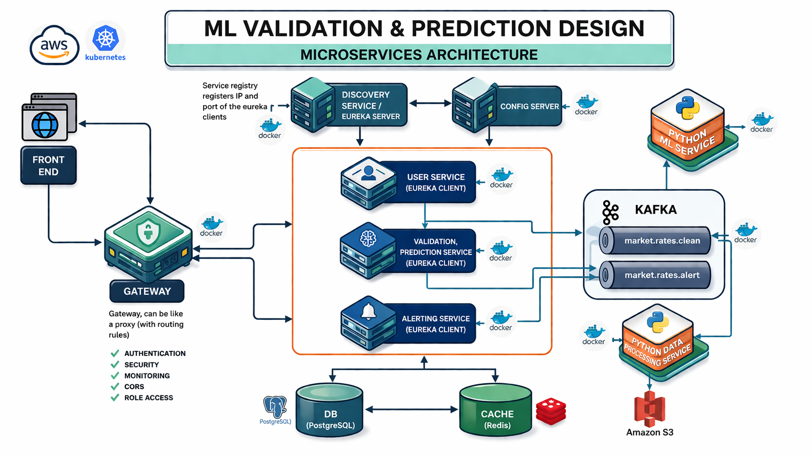
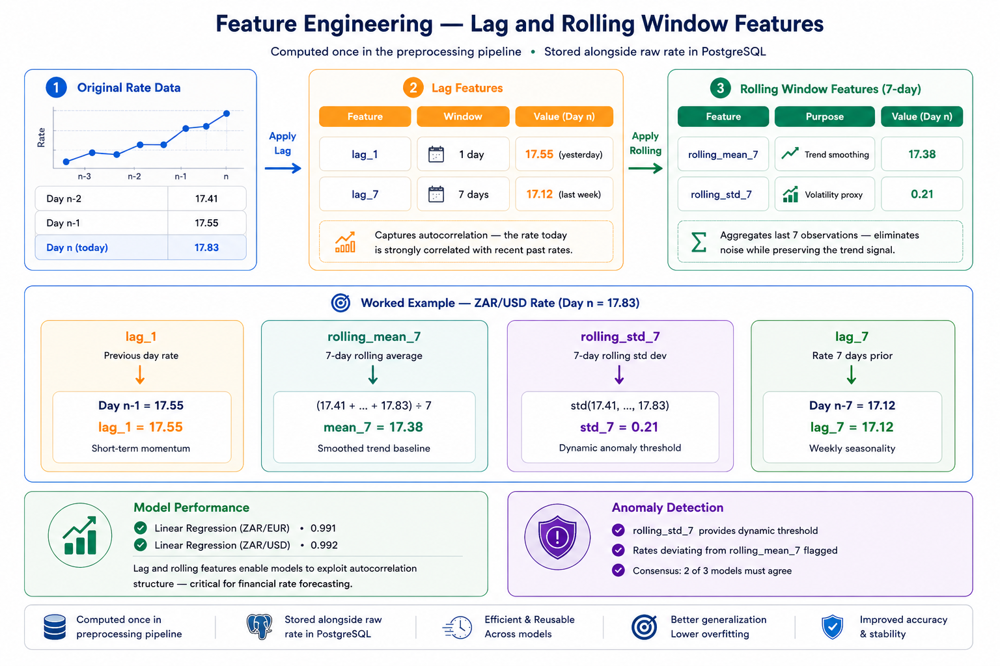
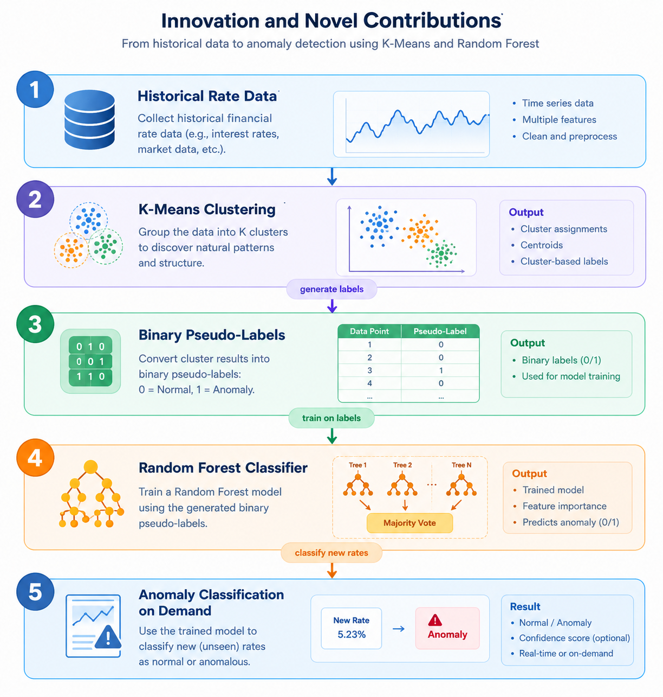
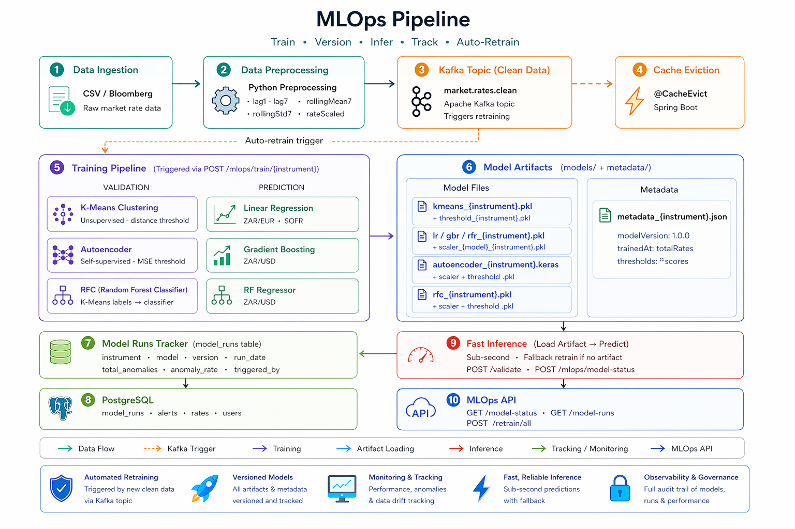
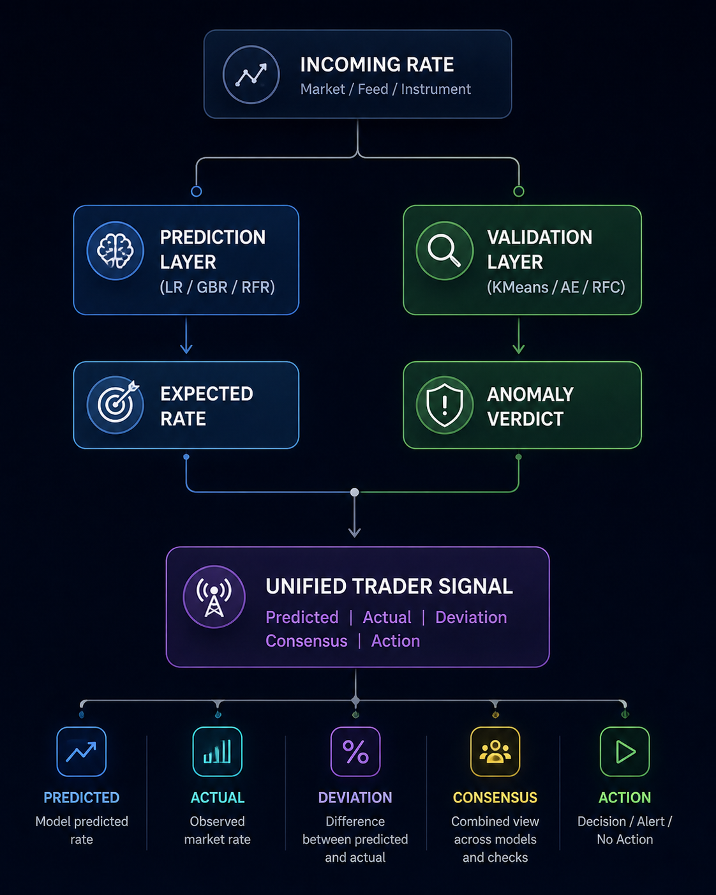

What I built, what it found, and what I’d tell you to learn.



| Training | Serving | |
|---|---|---|
| When | On new data arriving, or on demand | Every request |
| Cost | Seconds to minutes, full history | Must be milliseconds |
| Output | Artefact on disk plus a metadata file | An answer |
| Reads | The database | The artefact |

| Service | Jobs | Duration |
|---|---|---|
| React frontend | Build and push → update manifest | 4m 42s |
| Spring Boot service | Build JAR → build and push → update manifest | 1m 47s |
| Python ML service | Lint gate → build and push | 15m 54s |
| Detector | ZAR/EUR | ZAR/USD | SOFR |
|---|---|---|---|
| K-Means clustering | 245 | 335 | 113 |
| Autoencoder | 147 | 176 | 10 |
| Classifier (trained on K-Means labels) | 241 | 343 | 116 |

What to learn, what to build, and how to talk about it.
| Data engineering | Data science | |
|---|---|---|
| Optimises for | Correctness, reliability, cost | Insight, inference, decisions |
| Day to day | Pipelines, schemas, orchestration, on-call | Questions, models, analysis, communication |
| Judged on | Did the data arrive, correct and on time | Was the conclusion right and did it change anything |
| Shared | SQL, Python, version control, and a great deal of “is this number actually right?” | |